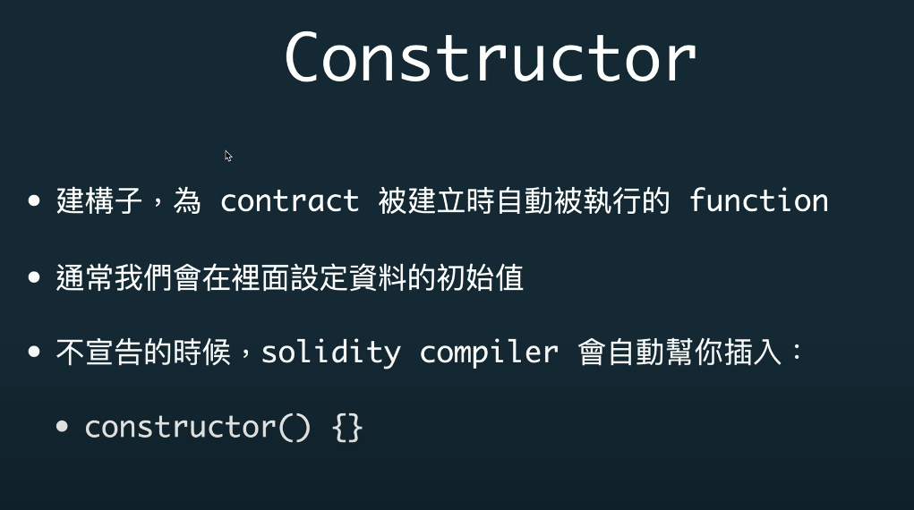

solidity
Table of Contents
1 配置
1.1 linux
1 . install node npm 2 . npm install ethereumjs-testrpc truffle
2 语法
2.1 名词
- 1 . 一个 block 封装一堆 transaction
- 2 . chainning 验证 block 的准确性
(会放上一个区块的数据,本block的准确)
- 3 . 如果不存transaction ,存一些别的东西,这就是 samrt contract 如图1
- 4 . address--user address , contract address
- 5 . 三种transaction ,user->user转钱,user->smart contract部署,user->部署好的 smart contract 特定的func
- 图 1
- 1. 账户 -- 两种 , 有 contract code 另一种没有的(EOA)
EOA 就是普通的 账户, EOA来创建 contract code 的account
- 2. contract code --> nonce ,balace , storage hash(永久储存的),code hash(代码放的地方)
External Owned Account --> nonce balance 如图2
- 图2
- 1. Eoa-Call
{
from :
to :
value :
data : (备注)
}
- 2. Eoa-create contract
{
from :
to : 留空
data : bytecode;
value : 创建后给contract address 塞钱
}
- 3. Eoa-call Function
{
}
- 1. 合约执行在哪里 --> eth vir machine 沙盒环境 如图3 - 2. 代码--> evm bytecode --> 执行 proram counter(计算 gas) --> 堆栈(stack,memory) --> 硬盘(account storage)
- 图3
- 1. abi Application Binary Interface (配置文件 交互参数)
2.2 solidity关键字
2.2.1 visibility 可以修饰 func 和 state variables
- 1. public
- public 的 func 会成为abi的一部分
- 除了能被internal call 也能被外部 message call
- 拿去宣告在state variables 上,则会产生getter func
- 2. private
- 不会成为abi的一部分
- 外部的message call 无法呼叫
- 表达的是可见性,但是对于blockchain上的 world state 这个数值可以被外部观察者看到的
- 3. external
- 会放入abi中
- 意味着这个func 能够被外部的合约或者transaction直接呼叫
- 但是无法直接被内部的使用
- eg : function f() external {}
f() //失败,无法直接呼叫
this.f() //成功,使用message call 呼叫
- external 不会做 memory copy .
- 4. internal
- 定义为internal 的func 或者 state variables 只能被
定义的合约或者派生的合约呼叫
2.2.2 state mutability 可变性,pure view default
- 1. pure 不读不写state - 2. view 只读不写 state - 3. default 会读写
- 改变state code
- 读取state code
2.2.3 create func
2.2.4 一些特殊的 func
- 1. get pubilc func(一个public 可以被任何人使用get func查询)
- 2. constructor

可以直接使用 constructor (参数){返回} 这样当做一个func来使用
它的特别之处只是在于 会在合约建立最初的时候触发此constructor
- 3. receive -ether
- 4. fallback
2.3 类型
2.3.1 map
零值:
bool--> false
array --> []
string--> ""
enum --> 第一个元素
- 限制

// SPDX-License-Identifier: MIT pragma solidity ^0.7.1; contract StudentScores { //定义一个叫 scores 的 map mapping(string => uint) scores; // 为了删除 我们把所有key(name) 放到这个数组 string[] names; //添加map name->value function addScore(string memory name, uint score) public { scores[name] = score; //把name push 到 array names.push(name); } //获取map value function getScore(string memory name) public view returns (uint) { return scores[name]; } function clear() public { //清空map while (names.length > 0) { //每次删最后一个 , 然后再pop delete scores[names[names.length-1]]; names.pop(); } } }
2.3.2 data location 资料位置
calldata :
送给合约的data
web3.sendTransaction(from:**,to:**,data:***).
function F(refType *calldata* value)
如果被宣告成calldata ,那么这个data为 read-only
memory :
合约内的变数的类型
生命周期为一个External Function call 的时间
storage :
长存储,不呼叫都会save
当需要state variables时,才会使用storage
生命周期与整个contract 一致,只要合约不被破坏掉,永远可以查到
2.3.3 array
1 . length 返回[]长度
2 . 动态增长的storage array 才有点性质
.push() 塞一个初始化为0 的元素到array
.push(v) 把v 添加到 []
.pop() 删除[]最后一个元素
2.3.4 struct
// SPDX-License-Identifier: MIT pragma solidity ^0.7.0; contract School { //定义一个班级的struct ,storage struct Class { //班级的teacher string teacher; //一个map 保存每个学生的成绩 name--> scores mapping(string => uint) scores; } //定义一个map 班级名称--> 班级的struct storage mapping(string => Class) classes; //添加班级, calldata 的类型 , 班级名称 老师 function addClass(string calldata className, string calldata teacher) public { //把添加类型为storage 的 class ,value为classvalue Class storage class = classes[className]; //添加班级的老师 class.teacher = teacher; } //添加学生成绩 function addStudentScore(string calldata className, string calldata studentName, uint score) public { // (classes[className]).scores[studentName] = score; 同为下面两行 Class storage class = classes[className]; class.scores[studentName] = score; } function getStudentScore(string calldata className, string calldata studentName) public view returns (uint) { // return (classes[className]).scores[studentName]; 等同与下面两行 Class storage class = classes[className]; return class.scores[studentName]; } }
2.3.5 func modifier
modifier name{ //do something _; //跳回原本的func //do something }
权限限定(限定owner)
modifier onlyOwner{ require( msg.sender == owner, //只有这个owner 可以使用这个func ); _; }
- withdraw 加 mutex
- modifier 继承和可被改写
virtual 被继承后可修改 override 修改继承的函数
2.3.6 library

1. 工具 不需要状态 不需要 code variables
2.3.7 event emit log
1. 在Truffle 项目中使用 console.log npm install --save-dev @nomiclabs/buidler// 或 yarn add @nomiclabs/buidler 然后在合约文件中引入 import "@nomiclabs/buidler/console.sol"; 然后在需要的地方加入 console.log() 打印即可
2.4 单位
2.4.1 ether units
1. wei 最小单位 i进制是 1e9 2. gwei 3. ether 4. finney 5. szabo 4,5 被删除了 在 0.7.0
2.4.2 time units
1. 除了年以外,没别的差别. 2. 在0.5.0以后,years 被移除了 //如果使用**天 . x*1 days
2.4.3 block properties
2.4.4 transaction properties
- 留意问题
1. 不要使用block.timestamp() 或者block.hash当做rand number 2. 使用blockhash(x)获取block hash 的时候, 如果 x<256 的话 会返回0 3. msg.gas()在0.5.0已经被移除了,如果查看当前 contract 的gas 使用gasleft() 4. tx.gasprice 获取这个transaction的gas price 5. 获取当前时间 now 在0.7.0版本已经被移除,使用 block.timestamp()来获取时间
2.4.5 计算, addmod mulmod keccheck256
3 solidity
3.1 部署
hello world
1 . 启动 testrpc 2 . truffle init 初始化项目 3 . contracts 下编写 sol 4 . truffle compile 5 . 编译结束 build/contracts 下有HelloWorld.json 6 . 修改 var HelloWorld = artifacts.require("HelloWorld"); module.exports = function(deployer) { deployer.deploy(HelloWorld); }; 7 . 修改truffle.config module.exports , networks 8 . truffle migrate 9 . 部署完成 10 . truffle console .与合约互动 11 . truffle-contract函数库 --> HelloWorld.deployed().then(instance => contract = instance) 12 . contract.getHello()// SPDX-License-Identifier: MIT pragma solidity >=0.4.22 <0.9.0; contract HelloWorld { string hello = "Hello World"; function getHello() public view returns(string memory){ return hello; } }
3.2 根据例子学习
1 . test
// SPDX-License-Identifier: GPL-3.0 // 1. license 可以设定 UNLICENSED pragma solidity >=0.7.0 <0.8.0; // 2. 设定和编译器开发相关的 大于0.7.0 小于 0.8.0 /** * @title Storage * @dev Store & retrieve value in a variable */ // 3. smart comtract 叫做 storage contract Storage { uint256 number; /** * @dev Store value in variable * @param num value to store */ function store(uint256 num) public { number = num; } /** * @dev Return value * @return value of 'number' */ function retrieve() public view returns (uint256){ return number; } }